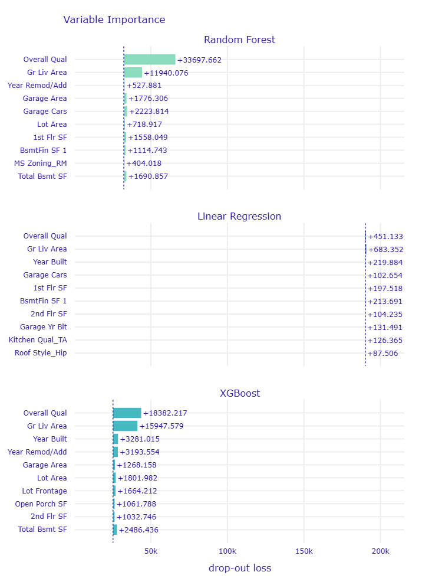
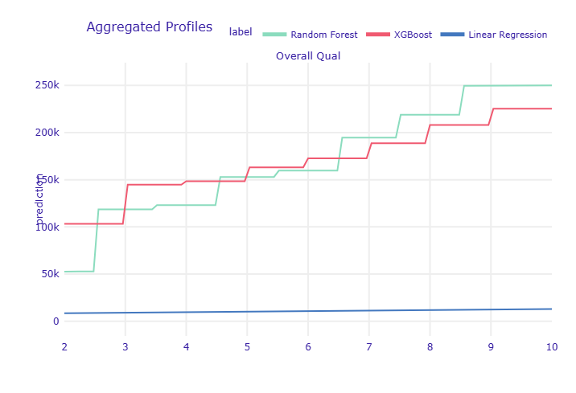
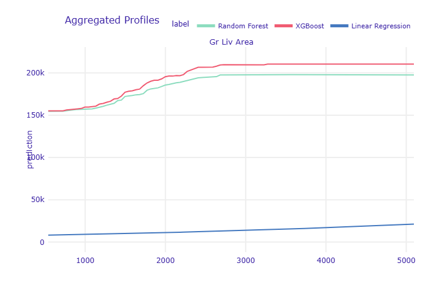
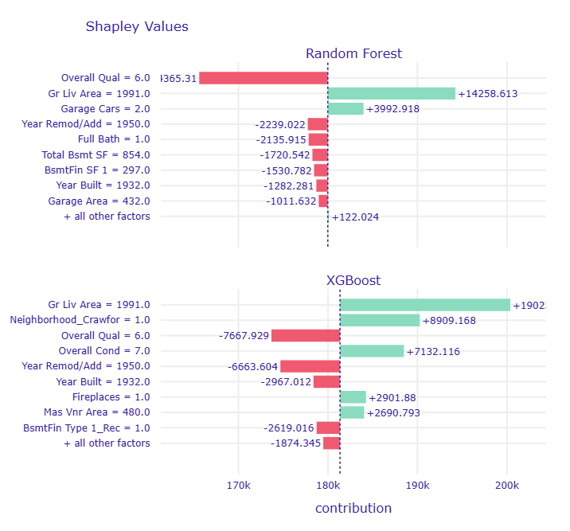

Load & inspect
2,930 rows × 82 columns from the Ames Housing dataset. First pass checks dtypes, cardinality, and the shape of SalePrice before touching missingness.
A tri-model comparison on the Ames Housing dataset — Random Forest, XGBoost, and Linear Regression — pulled apart with dalex to see which features drive price, how each model behaves outside the dense region of the data, and why a linear fit collapses where the tree-based models hold up.
Every stage below is fit on the training split first and only then applied to test — the rule that keeps the numbers in section 02 honest.
2,930 rows × 82 columns from the Ames Housing dataset. First pass checks dtypes, cardinality, and the shape of SalePrice before touching missingness.
Domain logic separates real gaps from encoded absence — Pool QC is blank because there's no pool, not because the value is unknown. Those get flagged before any statistical imputation runs.
2,344 training observations, 586 held out — untouched until final evaluation.
Remaining Missing-at-Random gaps (e.g. Lot Frontage) are imputed with a fit/transform pattern — the imputer learns only from training data, then transforms test data, closing off leakage through the back door.
Categoricals are one-hot encoded on train and aligned onto test. Target is log(SalePrice) to tame right skew. Linear Regression drops Total Bsmt SF — an exact sum of three other basement columns — to avoid perfect multicollinearity; the tree models keep the full feature set.
Explainers are built on the held-out test set, with predictions back-transformed from log-dollars to dollars. Three lenses: variable importance, partial dependence, and per-observation SHAP.
Metrics are computed after inverting the log transform, so error is directly comparable to sale price.
| Model | MAE | RMSE | R² |
|---|---|---|---|
| XGBoost BEST FIT | $14,102 | $25,294 | 0.9025 |
| Random Forest | $19,488 | $32,331 | 0.8408 |
| Linear Regression | $172,903 | $190,074 | −4.5030 |
Drop-out loss: how much test-set error increases when a feature's values are shuffled. Bigger bar, more the model depends on that feature.

Each curve holds every other feature fixed and sweeps one variable — showing how a model's prediction moves in isolation.


SHAP breaks a single prediction into per-feature contributions, in dollars, relative to the average prediction. This is test observation 0.

Structural gaps (no pool, no fireplace) were separated from genuine Missing-at-Random values before any statistical imputation ran — treating them the same would have manufactured noise.
MICE-XGBoost imputation was fit only on the training split and applied to test through fit/transform — the kind of detail that doesn't show up in a metric until it's wrong in production.
Total Bsmt SF is an exact sum of three other columns — fatal for
Linear Regression's coefficients, a non-issue for tree-based splits.
Random Forest and XGBoost plateau in sparse regions of the feature space; Linear Regression keeps extrapolating in a straight line — visible proof of why its R² goes negative.